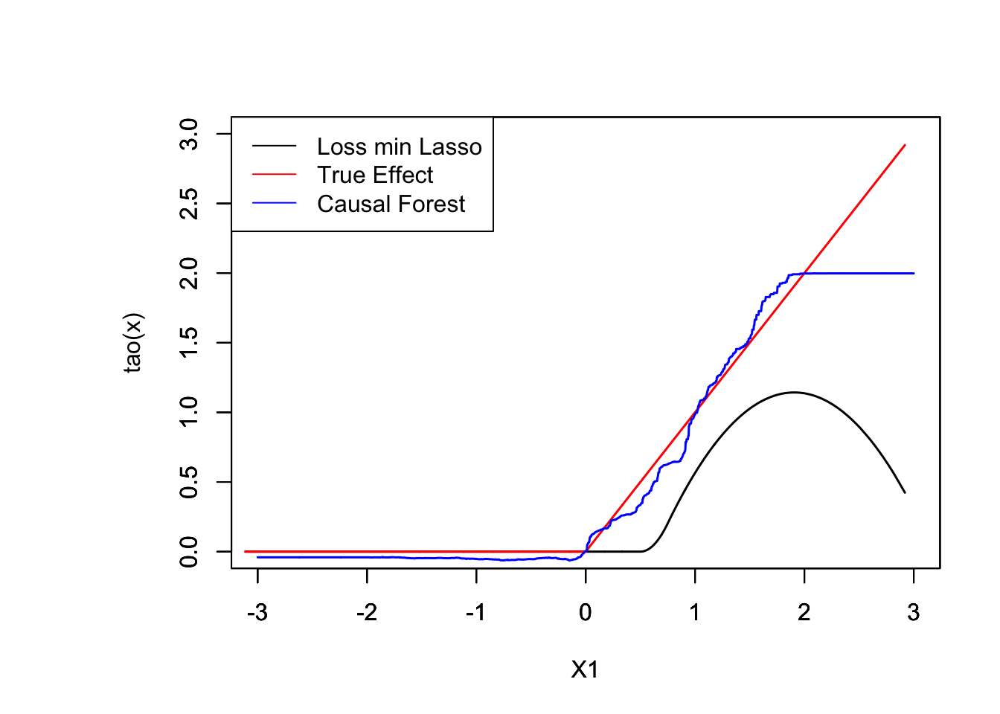

11.2 Estimation
set.seed(194)
# Generate Data
n <- 2000
p <- 10
X <- matrix(rnorm(n * p), n, p)
X.test <- matrix(0, 101, p)
X.test[, 1] <- seq(-2, 2, length.out = 101)
W <- rbinom(n, 1, 0.4 + 0.2 * (X[, 1] > 0))
prob <- 0.4 + 0.2 * (X[, 1] > 0)
Y <- pmax(X[, 1], 0) * W + X[, 2] + pmax(X[, 3], 0) + rnorm(n)
###################################
###################################
#
#
# 1. estimate m(X) and e(X)
# using cross-fitting
#
###################################
###################################
# cross-fitting index
K <- 10 # total folds
ind <- sample(1:length(W), replace = FALSE, size = length(W))
folds <- cut(1:length(W), breaks = K, labels = FALSE)
index <- matrix(0, nrow = length(ind) / K, ncol = K)
for(f in 1:K){
index[, f] <- ind[which(folds == f)]
}
# Build a function to estimate conditional means (m(x) and e(x)) using random forest
fun.rf.grf <- function(X, Y, predictkfold){
rf_grf <- regression_forest(X, Y, tune.parameters = "all")
p.grf <- predict(rf_grf, predictkfold)$predictions
return(p.grf)
}
# storing
predict.mat <- matrix(0, nrow = nrow(index), ncol = K) # to store e(x)
predict.mat2 <- predict.mat # to store m(x)
# for each fold k use other folds for estimation
for(k in seq(1:K)){
predict.mat[, k] <- fun.rf.grf(X = X[c(index[, -k]), ], Y = W[index[, -k]], predictkfold = X[c(index[, k]), ])
predict.mat2[, k] <- fun.rf.grf(X = X[c(index[, -k]), ], Y = Y[c(index[, -k])],
predictkfold = X[c(index[, k]), ])
}
W.hat <- c(predict.mat)
Y.hat <- c(predict.mat2)
################################
################################
#
# 2. Use LASSO to minimize
# the loss function
################################
################################
# rearrange features and response according to index
XX <- X[c(index), ]
YY <- Y[c(index)]
WW <- W[c(index)]
resid.Y <- YY - Y.hat
resid.W <- WW - W.hat
# Create basis expansion of features
for(i in seq(1, ncol(XX))) {
if(i == 1){
XX.basis <- bs(XX[, i], knots = c(0.25, 0.5, 0.75), degree = 2)
}else{
XX.basisnew <- bs(XX[, i], knots = c(0.25, 0.5, 0.75), degree = 2)
XX.basis <- cbind(XX.basis, XX.basisnew)
}
}
resid.W.X <- resid.W * XX.basis
resid.W.X <- model.matrix(formula( ~ 0 + resid.W.X))
#plot(XX[ ,1], pmax(XX[ , 1], 0))
# cross validation for lasso to tune lambda
lasso <- cv.glmnet(
x = resid.W.X,
y = resid.Y,
alpha = 1,
intercept = FALSE
)
#plot(lasso, main = "Lasso penalty \n \n")
# lambda with minimum MSE
best.lambda <- lasso$lambda.min
lasso_tuned <- glmnet(
x = resid.W.X,
y = resid.Y,
lambda = best.lambda,
intercept = FALSE
)
#print(paste("The coefficients of lasso tuned are:", coef(lasso_tuned), sep = " "))
pred.lasso <- predict(lasso, newx = XX.basis)
#########################
#
# Causal Forest
#
#########################
X.test <- matrix(0, nrow = nrow(X), ncol = ncol(X))
X.test[, 1] <- seq(-3, 3, length.out = nrow(X))
tau.forest <- causal_forest(X, Y, W)
tau.forest## GRF forest object of type causal_forest
## Number of trees: 2000
## Number of training samples: 2000
## Variable importance:
## 1 2 3 4 5 6 7 8 9 10
## 0.707 0.045 0.030 0.037 0.034 0.029 0.026 0.035 0.024 0.033tau.hat <- predict(tau.forest, X.test)$predictions
par(oma=c(0,4,0,0))
plot(XX[order(XX[ , 1]), 1], pred.lasso[order(XX[, 1])], ylim = c(0, 3), t = "l", xlab = " ", ylab = " ", xlim = c(-3, 3), lwd = 1.5)
par(new = TRUE)
plot(XX[order(XX[, 1]), 1], pmax(XX[order(XX[, 1]), 1], 0), col ="red", ylim = c(0, 3), t = "l", xlab = "X1", ylab = "tao(x)", xlim = c(-3, 3), lwd = 1.5)
par(new = TRUE)
plot(X.test[order(X.test[, 1]), 1], tau.hat[order(X.test[, 1])], t = "l", col = "blue", ylim = c(0, 3), xlab = "X1", ylab = "", xlim = c(-3, 3), lwd = 1.5)
legend("topleft", c("Loss min Lasso", "True Effect", "Causal Forest"), col = c("black", "red", "blue"), lty = rep(1, 3))